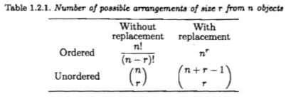
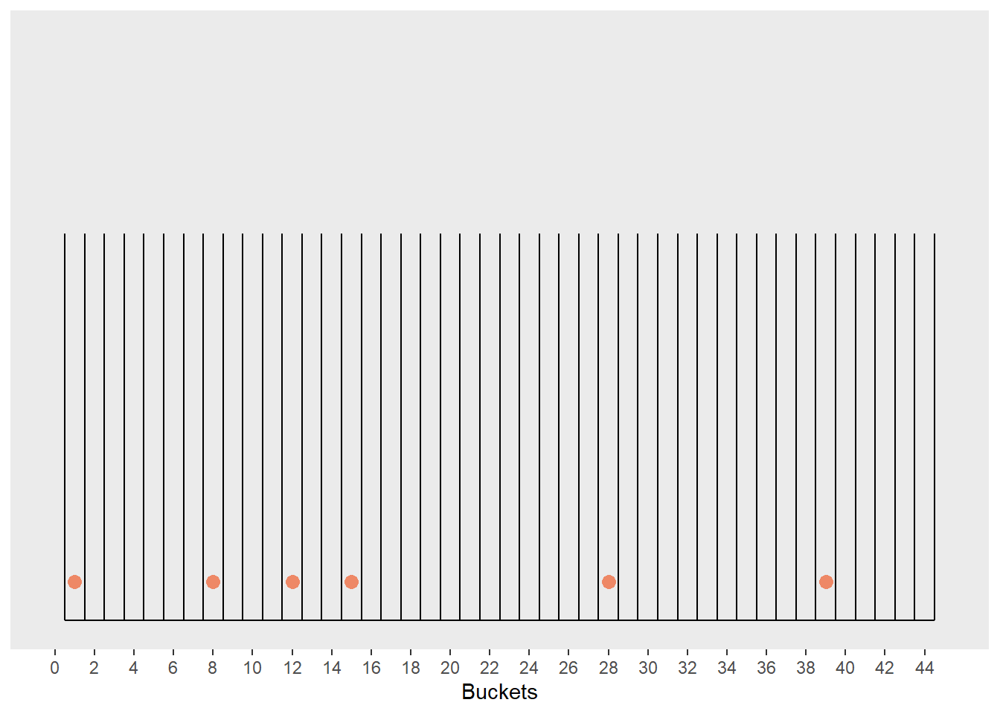

Chapter 1 Probability Theory
1.1 Chapter Notes
This chapter contains fairly standard material on basic probability theory. I won’t summarise it here, but will instead pick out a couple of points to explore further.
Counting
In the section on counting, we find this table:

with
\[ \binom{n}{r} = \frac{n!}{r!(n-r)!}. \] The formula for unordered, with replacement counting is the one I find difficult to recreate, so I’ll go into more detail on it here.
The chapter describes choosing, say, 6 balls from 44 numbered lottery balls. We want to count how many arrangements of these six balls there are, assuming we are choosing with replacement and we don’t care about the order. The chapter encourages re-interpreting this problem as one where you are tasked with distributing 6 markers among 44 labelled buckets. Each bucket can have more than one marker (we are sampling with replacement). Here’s a little illustration I made:
# Can return to this to attempt to animate it. 10 iterations of six draws each.
# Tricky points:
# What if more than one marker in a single bucket? Need to adjust y aes of geom_point
# How best to reset to blank after each 6 draws?
# Consider using 14 buckets instead of 44, a little easier to see what's happening and a simple change.
set.seed(71)
draws <- sample.int(44, size = 6*10, replace = TRUE) # we create 10 samples of 6 draws each
sample_num <- rep(1:10, each= 6) # label the samples 1-6
data_count <- tibble(sample_num = sample_num,
draw_num = 1:60,
draws = draws)
# drawing the buckets
plot_count_background <-
ggplot()+
geom_segment(aes(x=0.5:44.5,y=rep(0,45),xend=0.5:44.5,yend=rep(2,45)))+
geom_path(aes(x=c(0.5,44.5), y=c(0,0)))+
scale_x_continuous(limits = c(0,45), breaks = 2*0:22, name= "Buckets")+
scale_y_continuous(limits = c(0,3), breaks = NULL, name=NULL)+
theme(panel.grid.major = element_blank(),
panel.grid.minor = element_blank(),
panel.border = element_blank())
# placing the markers in the buckets
plot_count_background+
geom_point(data =data_count[1:6,],aes(x=draws,y=rep(0.2,times=6)),
size=3, colour= tol_light[[4]])
How many ways can we arrange these 6 markers across the 44 buckets? We think about taking each of the markers and the bucket walls and placing them in a big bag. Then we draw each of the objects in turn and place them on the table from left to right. In doing this we build up a picture that is equivalent to the one above
# I'm attempting an animation here. It does not work yet.
# Main issue is having the plot remember the previous states and add to them rather than writing over
# This was easier in the bar chart example, could just increment the height up one
# This time I'm trying to e.g. add entirely new points
set.seed(73)
draw_num <- 1:49
draws <- sample(c(rep(0,6),rep(1,43)),size=49, replace=FALSE) # we draw 6 markers (label 0) and 43 walls (label 1)
data_count <- tibble(draw_num = draw_num,
draws = draws,
wall_count = cumsum(draws))%>%
rowwise()%>%
mutate(point_x = ifelse(draws==0,draw_num,-5), # shove the points I don't want off-screen (to -5). v inelegant.
point_y = 0.2,
segment_x = ifelse(draws==1,wall_count+0.5,-5),
segment_y = 0,
segment_xend = segment_x,
segment_yend = 2)
# geom_segment(aes(x=0.5:44.5,y=rep(0,45),xend=0.5:44.5,yend=rep(2,45)))+
# drawing the buckets
pcb_2 <-
ggplot(data_count)+
geom_segment(data=tibble(x=c(0.5,44.5),y=rep(0,2),xend=c(0.5,44.5),yend=rep(2,2)),
aes(x=x,y=y,xend=xend,yend=yend))+
geom_path(data= tibble(x=c(0.5,44.5), y=c(0,0)),
aes(x=x,y=y))+
scale_x_continuous(limits = c(0,45), breaks = 2*0:22, name= "Buckets")+
scale_y_continuous(limits = c(0,3), breaks = NULL, name=NULL)+
theme(panel.grid.major = element_blank(),
panel.grid.minor = element_blank(),
panel.border = element_blank())
# placing the markers in the buckets
plot_draws <-
pcb_2 +
geom_point(aes(x=point_x,y=point_y),
size=3, colour= tol_light[[4]])+
geom_segment(aes(x=segment_x,y=segment_y,xend=segment_xend,yend=segment_yend))+
facet_wrap(~draw_num)
anim_draws <- plot_draws +
facet_null()+ # but instead of facetting by that variable...
transition_reveal(draw_num) # we include the variable in a gganimate function
animate(anim_draws,nframes=350,fps=20, end_pause = 50)We don’t need to consider the end walls, as they don’t help define a bucket, so we have 45-2=43 walls and 6 markers. 49 objects, that can be arranged in 49! ways. However this over-counts. Say we have a marker in bucket 15. We don’t care if this is marker 1, marker 4, or marker 6, since we don’t care about ordering. We have 6 choices for the first marker, 5 for the second, and so on, and so we have over-counted by a factor of 6!. Our count is now \(\frac{49!}{6!}\). The same argument applies to the walls - we don’t care about order here either, and so we are still over-counting by a factor of 43!. Our final count of the number of arrangements is:
\[ \frac{49!}{6!43!} = \binom{n+r-1}{r} \]
Inequalities: Bonferroni’s and Boole’s
Shortly after probability functions are introduced, the chapter derives the following statement from the axioms of probability:
\[ P(A \cup B) = P(A) + P(B) - P(A \cap B) \] Since probabilities are at most one (and so \(P(A \cup B) \leq 1\)), this gives us what the chapter calls a special case of Bonferroni’s inequality:
\[ P(A \cap B) \geq P(A) + P(B) - 1. \] The probability of two events occurring is bounded below by the sum of the individual probabilities less one.
The chapter also contains a proof of Boole’s inequality, which is closely related on Bonferroni’s:
\[ \begin{aligned} P\left( \bigcup_{i=1}^{\infty}A_i \right) \leq \sum_{i=1}^{\infty} P(A_i), && \text{(Boole's Inequality)} \end{aligned} \]
The proof starts by defining disjoint sets \(A^*_i\) as follows:
\[ \begin{aligned} A^*_1 = A_1, && A^*_i = A_i - \bigcup_{j=1}^{i-1}A_j, && i=2,3, \dots, \end{aligned} \] Since by this definition we have \(\cup_{i=1}^{\infty}A_i= \cup_{i=1}^{\infty}A^*_i\) and the \(A^*_i\)s are disjoint, we have:
\[ \begin{aligned} P\left( \bigcup_{i=1}^{\infty}A_i \right) = P\left( \bigcup_{i=1}^{\infty}A^*_i \right) = \sum_{i=1}^{\infty} P(A^*_i) \end{aligned} \] but by the construction of the \(A^*_i\)s this last sum must be less than or equal to \(\sum_{i=1}^{\infty} P(A_i)\), which gives the inequality.
Boole’s inequality is closely relating to Bonferroni’s in that we can derive Bonferroni’s from Boole’s using De Morgan’s laws:
\[ \begin{aligned} P\left( \bigcup_{i=1}^{n}A_i^c \right) &\leq \sum_{i=1}^{n} P(A_i^c), && \text{(Boole's inequality applied to complements of } A_i) \\ \implies1-P\left( \bigcap_{i=1}^{n}A_i \right) &\leq n- \sum_{i=1}^{n} P(A_i), && \text{(De Morgan's law and } P(A^c)=1-P(A)) \\ \implies P\left( \bigcap_{i=1}^{n}A_i \right) &\geq \sum_{i=1}^{n} P(A_i) - (n-1), && \text{(Rearranging terms)} \end{aligned} \] which is a more general version of Bonferroni’s inequality introduced above. We bound below the probability of \(n\) events all occurring by the sum of the individual probabilities, less \(n-1\). By the definition of intersections, we can also bound the probability of the intersection above by the minimum probability of any of the individual events \(A_i\).
\[ \min_{0\leq i\leq n} P(A_i) \geq P\left( \bigcap_{i=1}^{n}A_i \right) \geq \sum_{i=1}^{n} P(A_i) - (n-1) \]
In the chapter appendix, there is a section on an extension of Boole’s inequality for the probability of a union which makes the bounds more precise.
We start by defining some sums of probabilities of nested intersections:
\[ \begin{aligned} P_1 &= \sum_{i=1}^n P(A_i) \\ P_2 &= \sum_{1\leq i<j \leq n}^n P(A_i \cap A_j) \\ P_3 &= \sum_{1\leq i<j<k \leq n}^n P(A_i \cap A_j \cap A_k) \\ \vdots\\ P_n &= P(A_1 \cap A_2 \cap \dots \cap A_n) \\ \end{aligned} \] Then
\[ P(A_1 \cup A_2 \cup \dots \cup A_n) = P_1 -P_2 +P_3 -P_4 +\dots \pm P_n\\ \] This uses the inclusion-exclusion principles, the extension of:
\[ P(A \cup B) = P(A)+P(B)-P(A \cap B) \] to \(n\) sets.
Let’s assume for now that \(P_i \geq P_j\) if \(i \leq j\) (we’ll prove this momentarily - it’s left as an exercise in the chapter). Then we have a series of increasingly tight bounds for the probability of the union:
\[ \begin{aligned} P_1 &\geq P\left(\bigcup_{i=1}^n A_i \right) \geq P_1 - P_2 \\ P_1 - P_2 + P_3 &\geq P\left(\bigcup_{i=1}^n A_i \right) \geq P_1 - P_2 + P_3 -P_4 \\ &\vdots \end{aligned} \]
Which is an extension of Boole’s inequality, which only expressed that the probability of the union was bounded by \(P_1\):
\[ \begin{aligned} P_1=\sum_{i=1}^{\infty} P(A_i) \geq P\left( \bigcup_{i=1}^{\infty}A_i \right) \end{aligned} \]
Now we just need to prove that \(P_i \geq P_j\) if \(i \leq j\). This is question 1.43 (b) in the chapter, and is done in the question section.
1.2 Questions
Ex 1.42
Question
The inclusion-exclusion identity of Miscellanea 1.8.1 gets it name from the fact that it is proved by the method of inclusion and exclusion (Feller 1968, Section IV.1). Here we go into the details. The probability \(P(\cup_{i=1}^n A_i)\) is the sum of the probabilities of all the sample points that are contained in at least one of the \(A_i\)s. The method of inclusion and exclusion is a recipe for counting these points.
Let \(E_k\) denote the set of all sample points that are contained in exactly \(k\) of the events \(A_1, \dots, A_n\). Show that \(P(\cup_{i=1}^n A_i) = \sum_{i=1}^n P(E_i)\).
If \(E_1\) is not empty, show that \(P(E_1) = \sum_{i=1}^n P(A_i)\)
Without loss of generality, assume that \(E_k\) is contained in \(A_1, A_2, \dots , A_k\). Show that \(P(E_k)\) appears \(k\) times in the sum \(P_1\), \(\binom{k}{2}\) times in the sum \(P_2\), \(\binom{k}{3}\) times in the sum \(P_3\), etc.
Show that \[ k - \binom{k}{2} + \binom{k}{3} - \dots \pm \binom{k}{k} =1 \] (See Exercise 1.27.)
Show that parts (a) - (c) imply \(\sum_{i=1}^n P(E_i) = P_1 -P_2 +P_3 - \dots \pm P_n\), establishing the inclusion-exclusion identity.
Answer
Ex 1.43
Question
For the inclusion-exclusion identity of Miscellanea 1.8.1:
Derive both Boole’s and Bonferroni’s Inequality from the inclusion-exclusion identity.
Show that the \(P_i\) satisfy \(P_i \geq P_j\) if \(i \leq j\) and that the sequence of bounds in Miscellanea 1.8.1 improves as the number of terms increases.
Typically as the number of terms in the bound increases, the bound becomes more useful. However, Schwager (1984) cautions that there are some cases where there is not much improvement, in particular if the \(A_i\)s are highly correlated. Examine what happens to the sequence of bounds in the extreme case when \(A_i = A\) for every \(i\). (See Worsley 1982 and the correspondence of Worsley 1985 and Schwager 1985.)
Answer